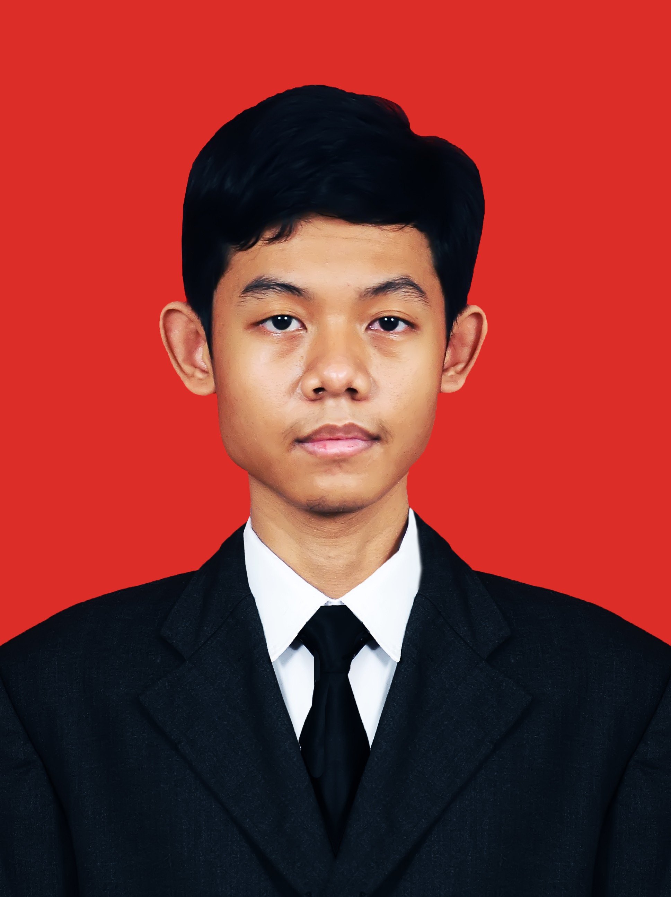

Engineering mobile experiences and web systems.
Hi, I'm Arya. I study Informatics Engineering at State Polytechnic of Malang (Polinema) with a 3.87 / 4.00 GPA. My primary focus is building cross-platform mobile applications using Flutter, while actively studying Cyber Security, Machine Learning, and Computer Vision.

About Me & Academic Journey
As a student at State Polytechnic of Malang, my coursework and personal projects combine software engineering fundamentals with hands-on client and team collaboration. I enjoy untangling real friction points, whether that is simplifying interfaces for non-technical users or managing sprint releases with classmates.
Featured Projects
Each project includes multiple screenshots documenting user flows, administrative tools, and technical implementation. Click on any preview to inspect the full photo gallery.
Technical Domains & Current Focus
Technologies I use for development alongside fields currently under study in my academic curriculum.
Mobile Engineering
Building native performance cross-platform applications with focus on usability and responsive layouts.
- Flutter & Dart
- Senior-friendly UI/UX Design
- Offline SQLite Storage
- Supabase Integration
- State Management Patterns
Web & Back-End Systems
Developing full-stack Content Management Systems and institutional profile portals with modern toolchains.
- PHP & Laravel Framework
- Filament Admin CMS
- PostgreSQL & MySQL Databases
- Tailwind CSS & Bootstrap
- Waterfall & Agile SDLC Practices
Curriculum Exploration
Emerging fields actively studied through university coursework and collaborative laboratory projects.
- Cyber Security Fundamentals
- Machine Learning with Google Colab
- Image Processing & Computer Vision
- Object-Oriented Programming (OOP)
- Project Management & Technical Docs
When Not Writing Code
I am a dedicated rhythm game enthusiast. Fast-paced beatmaps help me decompress and train hand-eye coordination.
Connect with Arya
Open to internship opportunities, student project collaborations, and discussions on Flutter and mobile development.